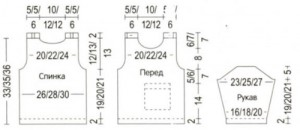

Пуловер
Размеры: 68 (74) 80
Вам потребуется:
- 150 (200) 200 г розовой и 50 г ярко-розовой пряжи Omega (50% нейлона, 50% акрила, 130 м/50 г)
- спицы №3,5 и №4,5
- 4 пуговицы
- 1 аппликация
Узоры
Лицевая гладь: лиц. ряды – лиц. петли, изн. ряды – изн. петли.
Изнаночная гладь: лиц. ряды – изн. петли, изн. ряды – лиц. петли.
Резинка 1 х 1: 1 ряд: попеременно 1 лиц., 1 изн. Начиная со 2-го ряда петли вязать по рисунку.
Плотность вязания, лицевая гладь: 22 петли и 30 рядов = 10 х 10 см.
Описание

Спинка
Розовой нитью набрать 60 (64) 68 петель и вязать лиц. гладью. Через 2 см от наборного края связать 2 ряда изн. и 8 рядов лиц. гладью, ярко-розовой нитью связать 2 ряда изн. (= сгиб) и 4 ряда лиц. гладью. Затем вязать розовой нитью 1 лиц. ряд изн., далее лиц. гладью. Через 19 (20) 21 см от сгиба закрыть для пройм с обеих сторон по 1 петле и в каждом 2-м ряду 6 раз по 1 петле = 46 (50) 54 петель. Через 12 (13) 13 см от начала пройм закрыть для выреза горловины средние 24 (28) 28 петли и обе стороны закончить раздельно. На оставшихся 11 (11) 13 петлях с обеих сторон связать для планок под пуговицы ещё 2 см резинкой и петли закрыть. Мешковина кармана Розовой нитью набрать 20 петель и вязать лиц. гладью. Через 8 см от наборного края закрыть с обеих сторон кром. и отложить оставшиеся петли.
Перед пуловера
Вязать как спинку, но с прорезью кармана и более глубоким вырезом горловины. Для прорези кармана вязать через 14 см от сгиба следующим образом: провязать 12 петель, отложить 18 петель и вместо них ввести в работу отложенные 18 петель мешковины кармана, далее вязать на всех петлях. На высоте пройм 8 см закрыть для выреза горловины средние 6 (10) 10 петель и обе стороны закончить раздельно. Для закругления закрыть с внутреннего края в каждом 2-м ряду 1 раз 3 петли, 2 раза по 2 петли и 2 раза по 1 петле. Для планок вязать на оставшихся петлях, как на спинке, при этом через 1 см от начала планки выполнить с правой стороны кром., провязать 5 петель, закрыть 2 петли, не провязывая, и сразу снова набрать 2 петли, ряд закончить. Через 2 см от начала планки петли закрыть. Связать 2-ю планку симметрично.
Рукава
Розовой нитью набрать 34 (36) 38 петель и вязать лиц. гладью. Через 2 см от наборного края связать 2 ряда изн., 8 рядов лиц. гладью, ярко-розовой нитью связать 2 ряда изн. (= сгиб) и 4 ряда лиц. гладью. Затем вязать розовой нитью 1 лиц. ряд изн., далее лиц. гладью, при этом в 1-м ряду равномерно прибавить 4 (6) 8 петель = 38 (42) 46 петель и затем прибавить с обеих сторон попеременно в каждом 4-м ряду и 6-м ряду 8 раз по 1 петле = 54 (58) 62 петель. Через 19 (20) 21 см от сгиба закрыть для оката рукава с обеих сторон по 1 петле и в каждом 2-м ряду 7 раз по 1 петле. Оставшиеся петли закрыть.
Сборка
Для планки кармана связать на отложенных петлях ярко-розовой нитью 6 рядов изн. гладью и петли закрыть. Планку отвернуть наружу и пришить. Пришить мешковину кармана и аппликацию. По вырезу горловины спинки набрать 37 (41) 41 петель, связать 2 см резинкой и петли закрыть. По вырезу горловины переда набрать 51 (55) 55 петлю, связать 2 см резинкой, при этом в 4-м ряду на 4-й и 5-й петлях в начале и в конце ряда выполнить по 1 отверстию для пуговицы. Петли закрыть. Втачать рукава. Выполнить боковые швы и швы рукавов. Пришить пуговицы.
Результат

Comments
comments powered by Disqus